新建工程
使用clion 创建一个QT工程，注意其中Qt CMake前缀路径的选择：
语言标准，Qt5最高选择C++14，Qt6可以选择C++17
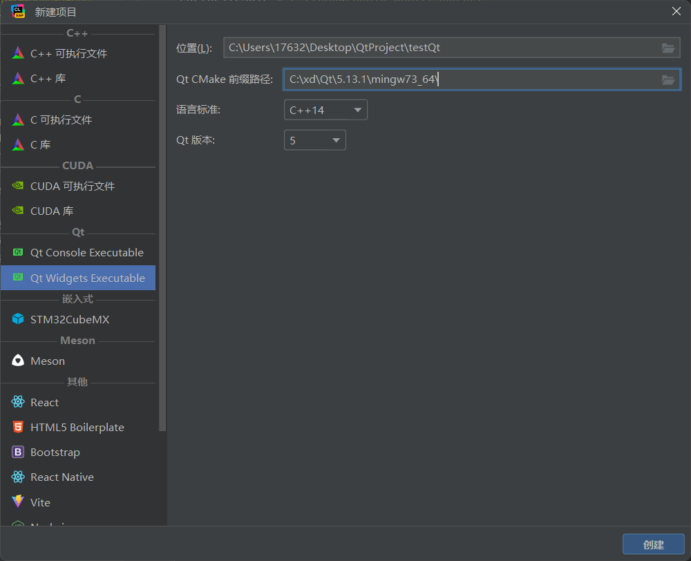
新建好的工程如下：
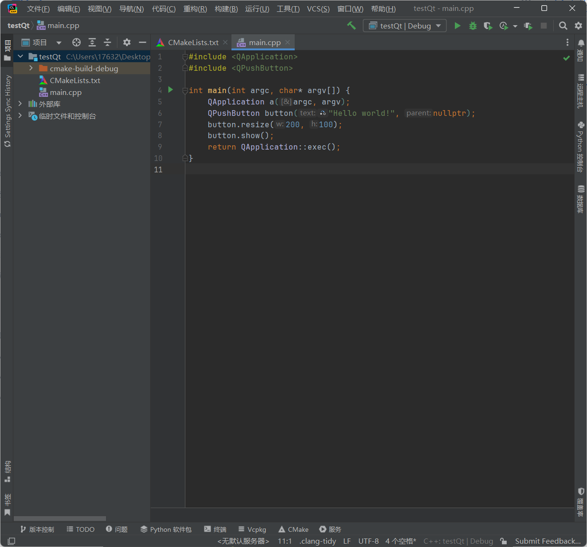
这个时候直接编译运行可能会出错，
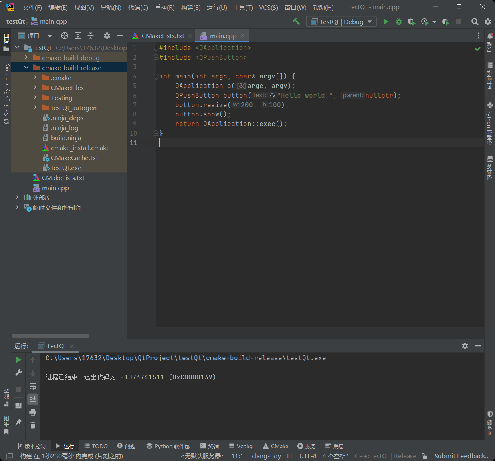
我们需要将CMakeLists.txt中的
1
2
3
| if (MSVC AND CMAKE_BUILD_TYPE MATCHES "Debug")
set(DEBUG_SUFFIX "d")
endif ()
|
修改为
1
2
3
| if (CMAKE_BUILD_TYPE MATCHES "Debug")
set(DEBUG_SUFFIX "d")
endif ()
|
修改cmake
此时CMakeLists.txt文件内容为
1
2
3
4
5
6
7
8
9
10
11
12
13
14
15
16
17
18
19
20
21
22
23
24
25
26
27
28
29
30
31
32
33
34
35
36
37
38
39
40
41
42
43
44
45
46
47
48
49
50
51
52
53
54
55
56
57
58
59
60
61
| cmake_minimum_required(VERSION 3.28)
project(testQt)
set(CMAKE_CXX_STANDARD 14)
set(CMAKE_AUTOMOC ON)
set(CMAKE_AUTORCC ON)
set(CMAKE_AUTOUIC ON)
set(CMAKE_PREFIX_PATH "C:/xd/Qt/5.13.1/mingw73_64/")
find_package(Qt5 COMPONENTS
Core
Gui
Widgets
REQUIRED)
add_executable(testQt src/main.cpp
src/mainwindows.cpp
src/mainwindows.h
src/mainwindows.ui
)
target_link_libraries(testQt
Qt5::Core
Qt5::Gui
Qt5::Widgets
)
if (WIN32 AND NOT DEFINED CMAKE_TOOLCHAIN_FILE)
set(DEBUG_SUFFIX)
if (CMAKE_BUILD_TYPE MATCHES "Debug")
set(DEBUG_SUFFIX "d")
endif ()
set(QT_INSTALL_PATH "${CMAKE_PREFIX_PATH}")
if (NOT EXISTS "${QT_INSTALL_PATH}/bin")
set(QT_INSTALL_PATH "${QT_INSTALL_PATH}/..")
if (NOT EXISTS "${QT_INSTALL_PATH}/bin")
set(QT_INSTALL_PATH "${QT_INSTALL_PATH}/..")
endif ()
endif ()
if (EXISTS "${QT_INSTALL_PATH}/plugins/platforms/qwindows${DEBUG_SUFFIX}.dll")
add_custom_command(TARGET ${PROJECT_NAME} POST_BUILD
COMMAND ${CMAKE_COMMAND} -E make_directory
"$<TARGET_FILE_DIR:${PROJECT_NAME}>/plugins/platforms/")
add_custom_command(TARGET ${PROJECT_NAME} POST_BUILD
COMMAND ${CMAKE_COMMAND} -E copy
"${QT_INSTALL_PATH}/plugins/platforms/qwindows${DEBUG_SUFFIX}.dll"
"$<TARGET_FILE_DIR:${PROJECT_NAME}>/plugins/platforms/")
endif ()
foreach (QT_LIB Core Gui Widgets)
add_custom_command(TARGET ${PROJECT_NAME} POST_BUILD
COMMAND ${CMAKE_COMMAND} -E copy
"${QT_INSTALL_PATH}/bin/Qt5${QT_LIB}${DEBUG_SUFFIX}.dll"
"$<TARGET_FILE_DIR:${PROJECT_NAME}>")
endforeach (QT_LIB)
endif ()
|
以上模板仅供参考。
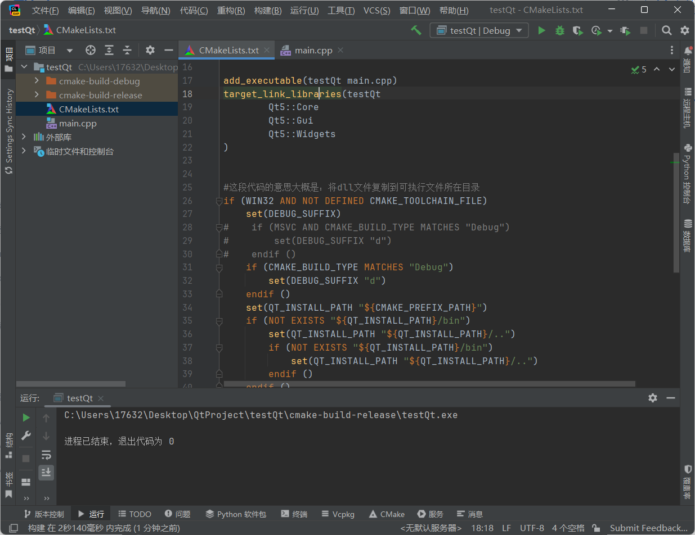
这个时候Debug模式和release模式均可以运行
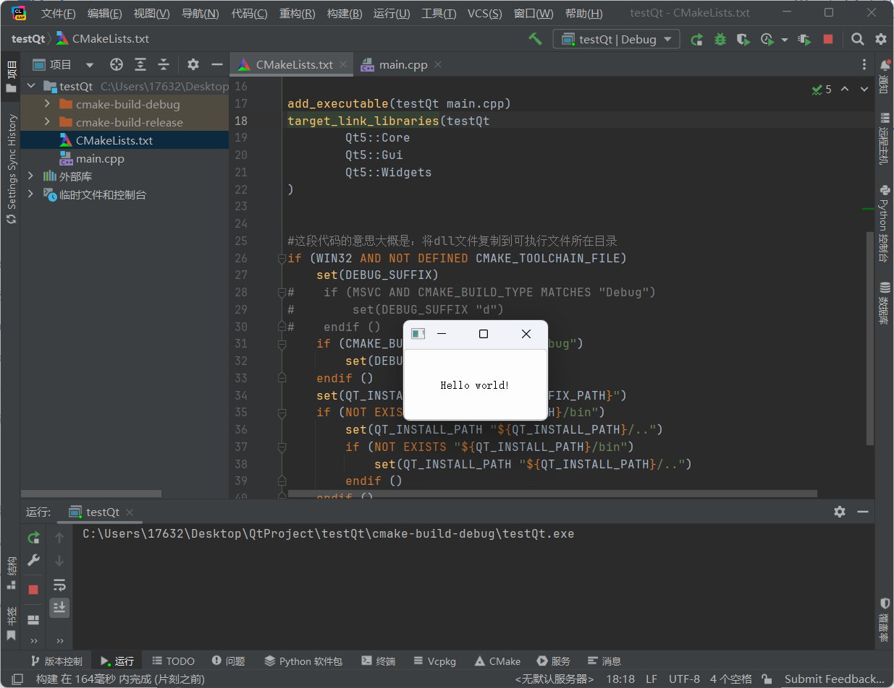
需要注意的是
如果安装的qt是mingw版本的工具链使用的也应该是Mingw版本，MSVC也同理。否则不能运行
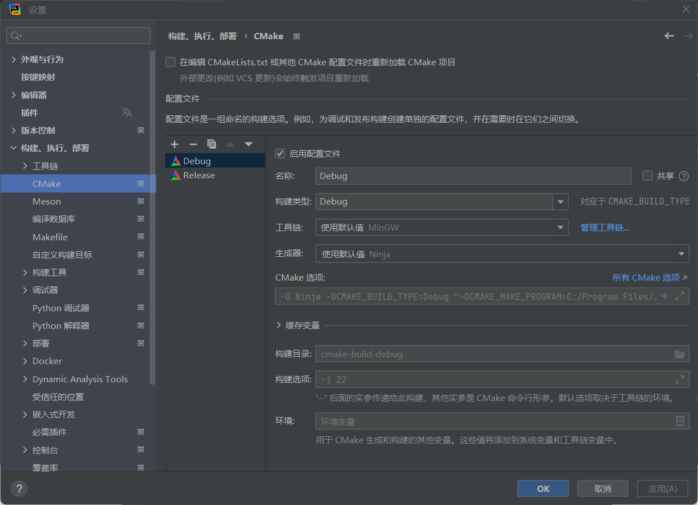
重构目录
在这里，为了目录结构的清晰，我们简单重构一下我们的项目目录。重构后如下：
- 新建一个src文件夹用来保存源代码包括 .h .cpp *.ui，也可以使用子文件夹，对大的Qt项目分模块
- test，用来保存测试代码。
- third_party，用来保存我们使用的第三方源代码，动态库，静态库等。
- resource，用来保存qrc资源文件，图片文件等。
- include(可选)，用来把我们项目的头文件暴漏给其他人使用。
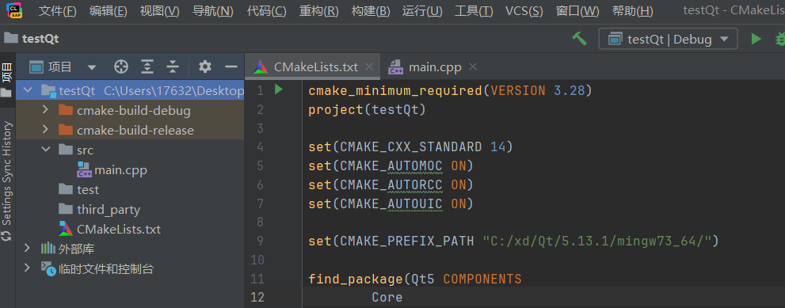
新建界面UI类
对着左侧项目根目录右键，选择新建，新建一个QT Ui类：
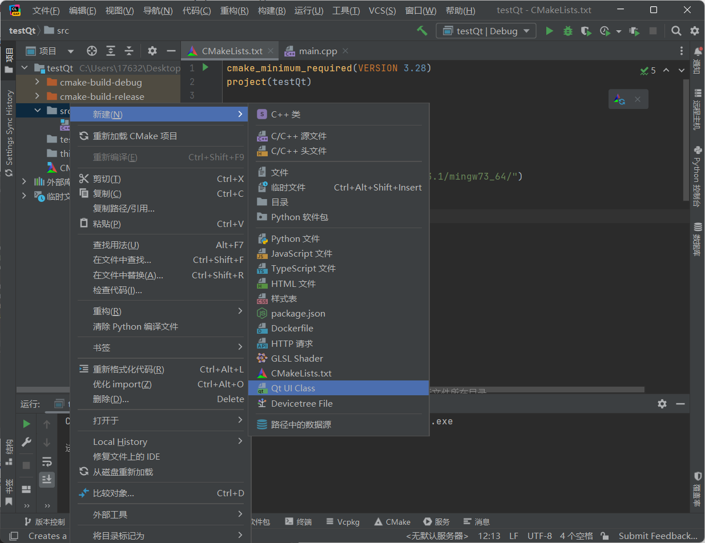
给新建的UI类起一个名字，这里就叫做QMainWindow，基类我们选择QMainwindow,此时我们可以看到，clion 会自动帮我们把新生成的文件添加到cmake中：
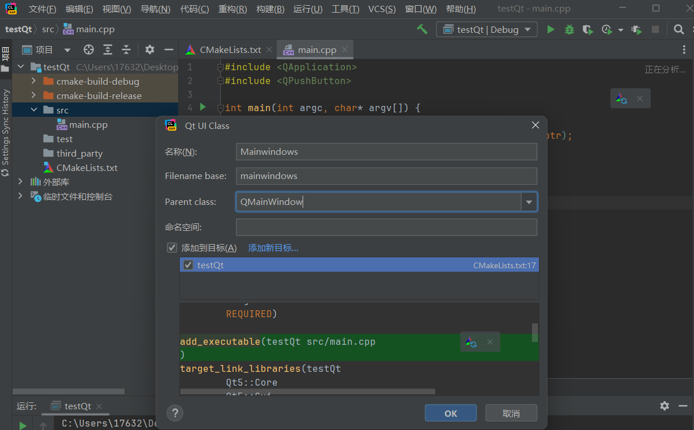
修改main.cpp
然后我们将main.cpp修改为以下内容：
1
2
3
4
5
6
7
8
9
10
| #include <QApplication>
#include "mainwindows.h"
int main(int argc, char* argv[]) {
QApplication a(argc, argv);
Mainwindows w;
w.show ();
return QApplication::exec();
}
|
编译运行，就能看到我们的结果啦：
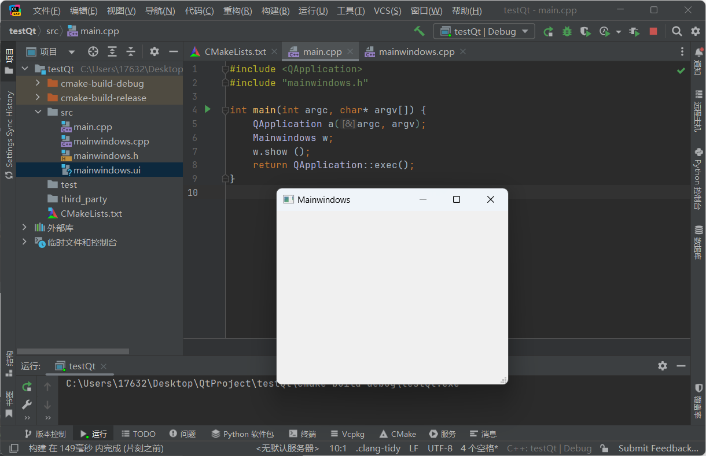
在clion 中添加外部工具
在设置中的外部工具中，添加一个新的外部工具，指向designer.exe：
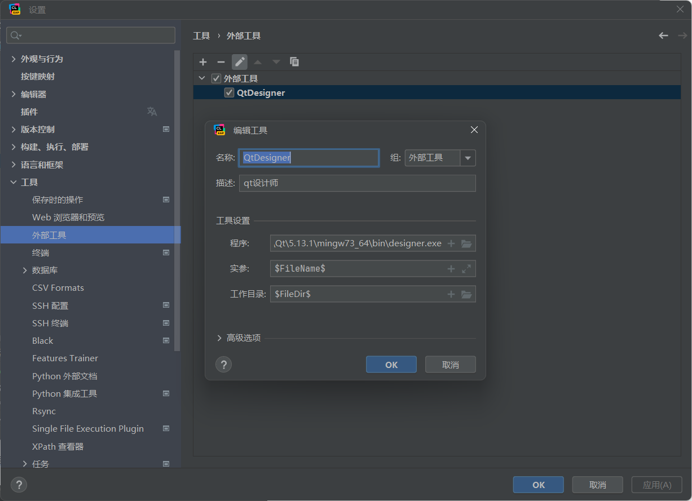
然后我们就能对着UI文件右键，选择外部工具，最后使用QtDesigner打开它：
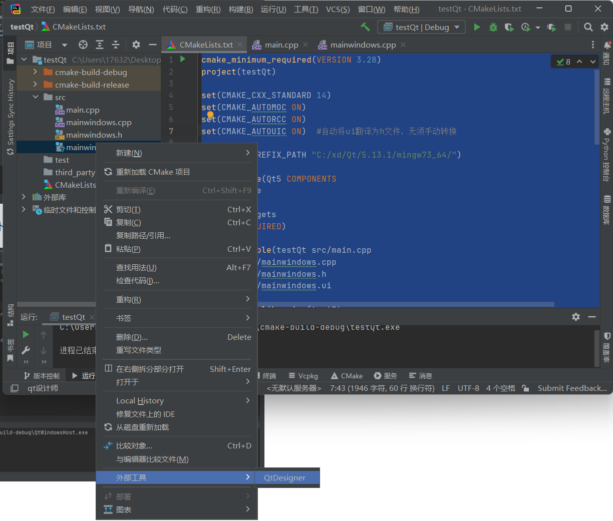
设置ui文件双击打开
如果您将Qt Designer与Qt分开安装，CLion可能无法检测到它，并将在编辑器中打开.ui文件。在这种情况下，请执行以下操作以在Qt Designer中打开它们：
前往设置->编辑器->文件类型
从“识别的文件类型”列表中选择“Qt UI Designer Form”，然后删除关联的文件扩展名：

选择在关联的应用程序中打开的文件并添加扩展名：.ui
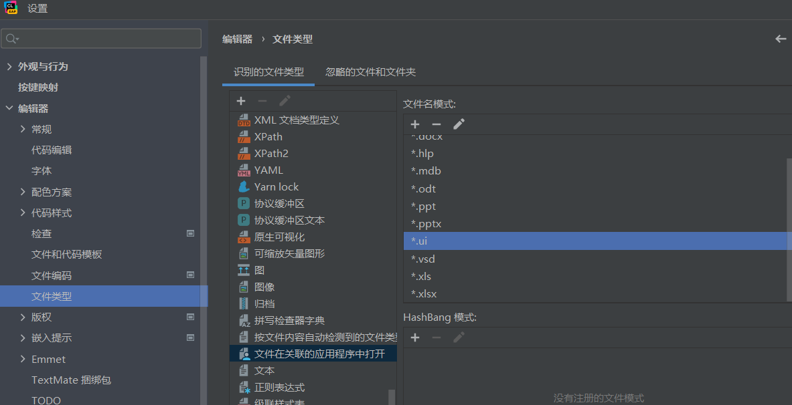
保存。
同时确保ui文件在系统的默认打开方式是Qt Designer ，如果不是，则应该右击ui文件并设置打开方式为
默认应用。
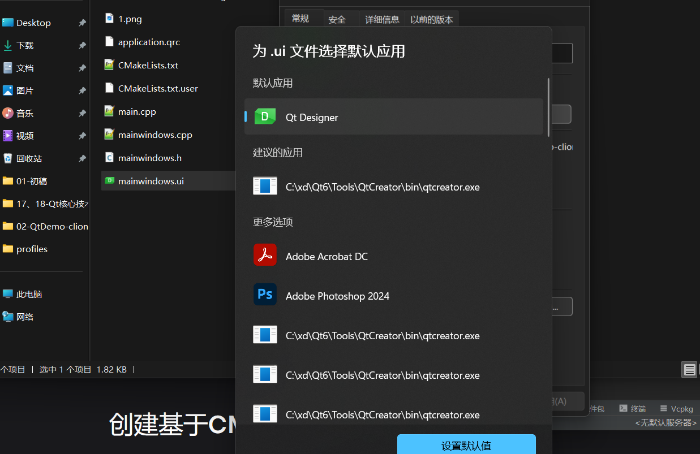
此时双击ui文件既可以开打Qt Designer
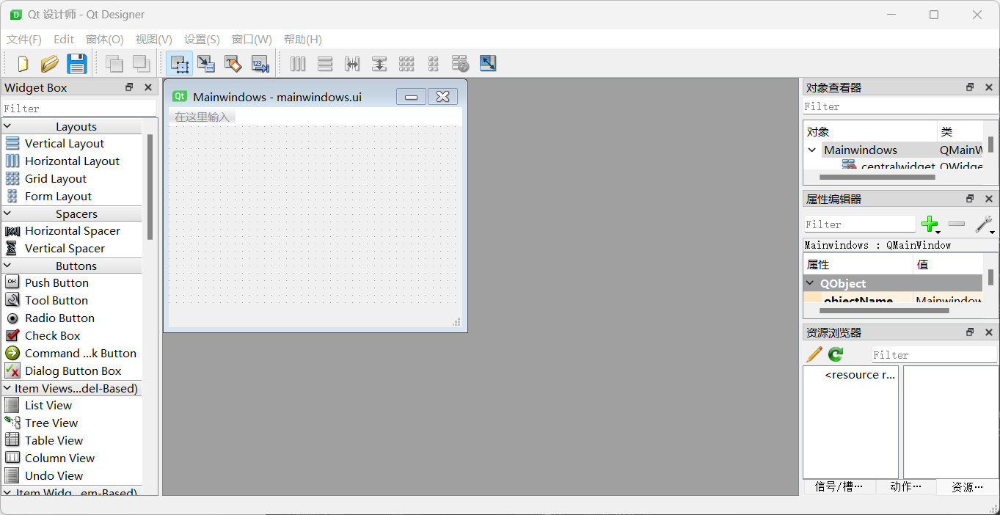
添加qrc资源文件
可以在Qt Designer中手动添加，点击资源浏览器资源编辑，新建资源。
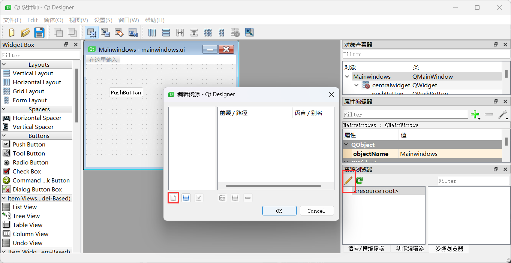
文件名为src.qrc 保存到项目新建的resource目录。
添加图片文件
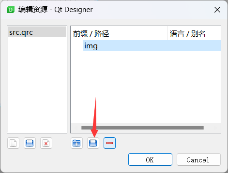
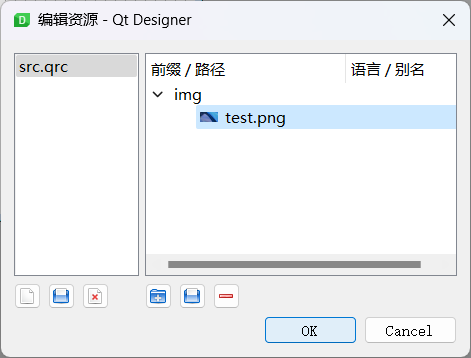
给主窗口添加背景图，并保存
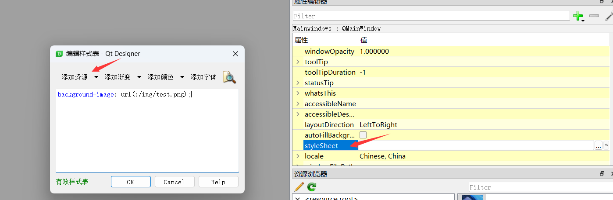
给CMakeLists.txt添加资源文件 resource/src.qrc
1
2
3
4
5
6
| add_executable(testQt src/main.cpp
src/mainwindows.cpp
src/mainwindows.h
src/mainwindows.ui
resource/src.qrc
)
|
运行即可看到效果
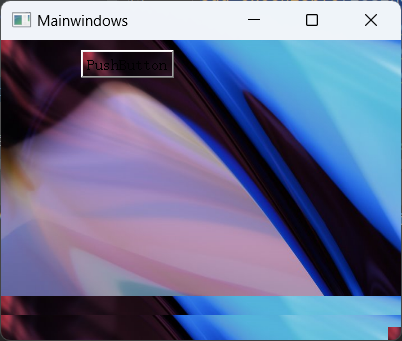
参考
使用 clion 开发 QT - 知乎 (zhihu.com)
Qt项目 |CLion 文档 (jetbrains.com)
QML语法支持 |CLion 文档 (jetbrains.com)